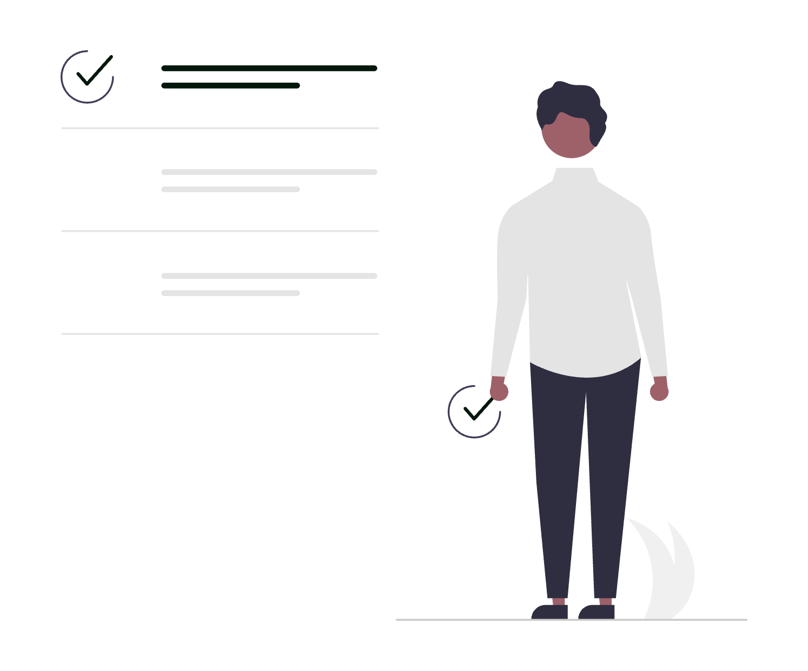

Trello este un instrument de management vizual al sarcinilor și proiectelor bazat pe metodologia Kanban - tablouri (boards), liste și carduri care redau starea fiecărei sarcini dintr-o privire. Dacă ești avocat și gestionezi simultan zeci de dosare, termene, sarcini interne și solicitări din partea clienților, Trello poate deveni sistemul tău de operare pentru fluxul de lucru: cine face ce, până când, în ce stadiu și cu ce materiale atașate.
Acest ghid acoperă funcționalitățile reale ale platformei, setările care contează, automatizările disponibile și configurațiile avansate aplicabile direct în activitatea juridică.
1. Structura de bază: Board-uri, Liste și Carduri adaptate practicii juridice
Înțelegerea celor trei niveluri este punctul de plecare pentru orice configurație eficientă:
- Board (tablou): reprezintă un proiect sau un domeniu de activitate. Exemple pentru avocați:
Dosare active,Onboarding clienți noi,Sarcini administrative cabinet,Contracte în negociere. - Listă: reprezintă o etapă sau o stare. Exemple pentru un board de dosare:
De revizuit,În așteptare client,La instanță,Finalizat. - Card: reprezintă o sarcină sau un dosar concret. Fiecare card conține termenul, responsabilul, documentele atașate, checklist-ul de acțiuni și istoricul activității.
Structura recomandată pentru un board de dosare active:
📋 Dosare Active
├── Nou intrat
├── Documentare și analiză
├── Pregătire acte procedurale
├── În așteptare (client / instanță / terț)
├── Termen programat
└── Finalizat / Arhivat
Fiecare dosar devine un card care avansează prin liste de la stânga la dreapta pe măsura progresului, oferind o imagine instantanee a stadiului tuturor dosarelor.
2. Configurarea unui Card complet pentru un dosar juridic
Un card Trello bine configurat înlocuiește note răzlețe, e-mailuri pierdute și tablele fizice. Iată ce merită completat la fiecare card de dosar:
- Titlu clar:
[Nr. dosar] – [Nume client] – [Obiect](ex.2026/142 – Ionescu M. – litigiu comercial). - Descriere: context factual rezumat, pretenții, stadiu procedural.
- Members (Membri): asignează avocatul responsabil și eventualii colaboratori - vor primi notificări automate la modificări.
- Labels (Etichete): codifică vizual tipul dosarului (vezi secțiunea 3).
- Due date (Dată scadentă): setează termenul imediat următor din instanță sau deadline-ul intern. Trello trimite automat notificare cu 24h înainte de expirare.
- Checklist: lista de sarcini specifice dosarului - redactare întâmpinare, obținere extras CF, depunere la registratură etc.
- Attachments (Atașamente): poți atașa fișiere direct din calculator, Google Drive sau Dropbox.
- Custom Fields: câmpuri personalizate pentru nr. dosar, instanță, valoare obiect, cod client (necesită Power-Up, detalii la secțiunea 5).
3. Sistemul de Etichete (Labels) pentru clasificarea dosarelor
Trello permite maximum 10 etichete colorate per board. Organizate corect, redau dintr-o privire natura dosarului fără să deschizi cardul.
Schema recomandată pentru un cabinet de avocatură:
| Culoare | Semnificație |
|---|---|
| 🔴 Roșu | Termen iminent (sub 48h) / Urgent |
| 🟠 Portocaliu | Litigiu civil |
| 🟡 Galben | Litigiu comercial |
| 🟢 Verde | Contract / Consultanță |
| 🔵 Albastru | Dreptul muncii |
| 🟣 Mov | Drept penal |
| ⚫ Negru | Executare silită |
| ⬜ Gri | Arhivat / Suspendat |
Etichetele pot fi cumulate pe același card - un dosar poate fi simultan Litigiu civil și Termen iminent.
4. Due Dates, Remindere și Vizualizarea Termenelor
Trello nu este un calendar nativ, dar gestionarea termenelor funcționează solid dacă respecți câteva reguli:
- Due date: folosește-l exclusiv pentru termenul cel mai apropiat sau deadline-ul intern critic - nu pentru data creării dosarului.
- Start date: disponibil pe lângă due date, util pentru a marca când a început lucrul la o sarcină sau un dosar.
- Culoarea automată a datei scadente: Trello colorează automat cardul - galben dacă scadența e în ziua curentă, roșu dacă a trecut, gri dacă e îndeplinit (checkbox bifat).
- Notificări: membrul asignat primește notificare la 24h înainte de expirarea due date-ului, prin email și push notification (dacă are aplicația mobilă activată).
- Calendar Power-Up (gratuit, inclus în planul Free): activează vizualizarea Calendar din bara laterală - toate cardurile cu due date apar pe o grilă lunară, oferind o perspectivă similară unui calendar de termene.
Regulă practică: când un termen se amână (reprogramare dosar la instanță), actualizezi due date-ul în card și toți membrii asignați sunt notificați automat - fără e-mailuri separate de informare.
5. Custom Fields - câmpuri personalizate pentru date juridice specifice
Custom Fields este un Power-Up gratuit (disponibil pe toate planurile, inclusiv Free) care adaugă câmpuri structurate pe fiecare card. Pentru avocați, utilitatea este imediată:
Câmpuri recomandate de configurat:
- Număr dosar (tip: text): numărul oficial de la instanță sau din sistemul intern.
- Instanță (tip: dropdown): listă predefinită - Judecătorie, Tribunal, Curte de Apel, ÎCCJ etc.
- Valoare obiect (tip: number): valoarea litigiului sau a contractului.
- Cod client (tip: text): ID-ul clientului din sistemul tău de evidență.
- Data constituirii (tip: date): data deschiderii dosarului.
- Tip procedură (tip: dropdown): civil, penal, comercial, contencios administrativ, executare silită.
Câmpurile custom apar vizibil pe fața cardului (front of card), nu doar în interior, dacă activezi opțiunea Show on front of card din setările fiecărui câmp - astfel datele cheie sunt vizibile direct din board, fără să deschizi cardul.
6. Checklist-uri și progresul sarcinilor
Checklist-urile din Trello sunt mai puternice decât par la prima vedere:
- Checklist cu assignee individual: fiecare item dintr-o listă poate fi asignat unui membru diferit al echipei - util când mai mulți avocați contribuie la același dosar.
- Due date per item: fiecare task din checklist poate avea propriul deadline, independent de due date-ul cardului.
- Progres vizibil: bara de progres procentuală apare automat pe fața cardului pe măsură ce bifezi taskuri (
3/7 completate = 43%). - Copiere checklist: dacă ai un checklist standard (ex. „Pași onboarding client nou" sau „Verificări preliminare dosar nou"), îl poți copia pe orice card nou din opțiunea Copy checklist from... - elimini complet rescrierea manuală.
Șablon checklist pentru un dosar de litigiu civil:
☐ Analizat cererea de chemare în judecată
☐ Consultat client - poziție și probe disponibile
☐ Verificat competența instanței
☐ Redactat întâmpinare
☐ Colectat înscrisuri doveditoare
☐ Depus la registratură / portalul instanței
☐ Confirmat număr dosar instanță
☐ Calendarizat termen în sistem

7. Butler - automatizări integrate fără cod
Butler este motorul de automatizare nativ al Trello, disponibil pe toate planurile (inclusiv Free, cu un număr limitat de rulări/lună). Nu necesită instrumente externe și se configurează direct din interfața Trello.
Tipuri de automatizări relevante pentru avocați:
Reguli bazate pe acțiuni (Rules):
- Când un card este mutat în lista
Finalizat, bifează automat toate itemurile din checklist și arhivează cardul după 7 zile. - Când due date-ul unui card expiră fără să fie marcat complet, mută cardul în lista
Necesită atențieși notifică membrul asignat. - Când un card nou este creat în lista
Nou intrat, asignează automat avocatul coordonator și adaugă un checklist standard de onboarding.
Butoane personalizate pe card (Card Buttons):
- Adaugă un buton
Programează termencare setează automat un checklist și un due date la 30 de zile. - Adaugă un buton
Dosar finalizatcare mută cardul înArhivat, adaugă eticheta verde și adaugă un comentariu cu data finalizării.
Automatizări programate (Scheduled Commands):
- În fiecare luni dimineață la 08:00, creează automat un card în lista
De revizuitcu toate cardurile cu termen în săptămâna respectivă. - La sfârșitul fiecărei luni, arhivează automat toate cardurile din lista
Finalizatmai vechi de 30 de zile.
Configurarea Butler: deschide orice board → click pe Automation din bara de meniu de sus → Create rule / Create button / Create scheduled command.
8. Power-Ups esențiale pentru avocați
Pe lângă Custom Fields și Calendar (deja menționate), acestea merită activate:
- Card Repeater: creează automat carduri recurente la intervale predefinite - util pentru sarcini periodice (ex. verificare lunară platforme instanță, trimitere raport lunar client).
- Trello for Gmail (extensie Chrome): transformă orice e-mail în card Trello direct din Gmail, cu subiectul pre-completat și opțiunea de a alege board-ul și lista.
- Google Drive Power-Up: atașează fișiere direct din Google Drive la carduri, cu previzualizare inline - fără descărcări intermediare.
- Slack Power-Up: primești notificări Trello direct în canalele Slack relevante; poți crea carduri Trello din comenzi Slack (
/trello add). - Voting Power-Up: util în ședințele de echipă pentru prioritizarea dosarelor sau a deciziilor strategice.
Activarea unui Power-Up: Board → Power-Ups (bara laterală) → caută după nume → Add.
9. Vizualizări avansate: Timeline, Table și Dashboard
Planurile Trello Standard, Premium și Enterprise (nu Free) deblochează vizualizări avansate care schimbă fundamental modul de utilizare:
- Timeline View: afișează cardurile pe o axă temporală (similar Gantt), grupate pe liste sau pe membrii. Util pentru a vedea distribuția termenelor pe luni întregi și suprapunerile de workload.
- Table View: toate cardurile din board afișate tabelar, cu coloane sortabile după label, due date, membri, câmpuri custom. Ideal pentru export mental sau pentru ședințe de status.
- Calendar View (mai bogat față de Power-Up-ul gratuit): integrează toate due date-urile și start date-urile într-un calendar lunar/săptămânal complet, cu drag & drop pentru reprogramare.
- Dashboard View: panouri statistice - număr carduri per listă, distribuție pe etichete, carduri fără due date, carduri expirate. Util pentru managementul cabinetului și identificarea blocajelor.
- Map View: afișează pe hartă cardurile care conțin adrese - mai puțin relevant în avocatură, dar util dacă gestionezi locații (ex. imobile în litigii).
10. Workspace, Membri și Permisiuni
Workspace este nivelul de organizare deasupra board-urilor. Configurarea corectă a permisiunilor este esențială pentru confidențialitatea dosarelor:
- Workspace visibility: setează la Private - nimeni din afara workspace-ului nu vede board-urile.
- Board visibility: fiecare board poate fi
Private(doar membrii invitați),Workspace(toți membrii din workspace) sauPublic(oricine cu linkul). Pentru dosare juridice: mereu Private. - Guest members: poți invita colegi externi (ex. avocați colaboratori) pe board-uri specifice, fără să le dai acces la întregul workspace - din Board Settings → Invite Members → Guest.
- Observer role (plan Premium+): membrii cu rol Observer pot vedea board-ul și cardurile, dar nu pot face modificări - ideal pentru clienți cărora le oferi transparență limitată asupra stadiului dosarului.
- Dezactivează opțiunea „Members can invite" din setările workspace-ului dacă vrei ca numai administratorul să poată adăuga membri noi.
11. Template-uri de Board pentru fluxuri juridice frecvente
Trello permite salvarea oricărui board ca Template, reutilizabil la crearea unui board nou cu un singur click.
Template-uri recomandate de creat și salvat:
- Template Dosar nou: board cu listele standard, checklist de onboarding pre-completat, câmpuri custom configurate, etichete definite și butoane Butler adăugate.
- Template Proiect contract: board specific pentru negocierea și finalizarea unui contract - liste:
Draft inițial,Comentarii client,Revizie internă,Semnat,Arhivat. - Template Sarcini săptămânale cabinet: board personal sau de echipă cu structura săptămânii de lucru.
Salvare template: Board → Show menu → More → Copy board sau Create template from this board.
12. Integrarea cu Google Calendar și Gmail
- Google Calendar sync: din Calendar Power-Up → Settings → iCal feed → copiezi URL-ul și îl adaugi în Google Calendar ca calendar nou (Other calendars → From URL). Toate due date-urile din Trello apar automat în Google Calendar și se sincronizează în timp real.
- Gmail → Trello: prin extensia Trello for Gmail (Chrome) sau prin Zapier/Make, poți transforma e-mailuri în carduri Trello. Exemplu de flux: e-mail primit de la instanță → card automat în lista
Termen programatcu subiectul ca titlu și corpul e-mailului în descriere. - Zapier / Make (Integromat): pentru fluxuri mai complexe fără cod - ex. când un client completează un formular de contact, se creează automat un card în board-ul
Onboarding clienți noicu datele formularului pre-completate.
13. Aplicația mobilă Trello - utilizare eficientă din deplasare
Aplicația Trello pentru iOS și Android este completă funcțional, nu o versiune redusă:
- Quick add: din ecranul principal, butonul
+creează rapid un card nou pe orice board - util când ești la instanță și vrei să notezi imediat o sarcină. - Notifications center: toate notificările sunt centralizate; poți seta care tipuri te notifică prin push (menționare, apropierea unui due date, mișcare card).
- Offline mode: cardurile deschise anterior sunt accesibile offline; modificările se sincronizează la reconectare.
- Camera atașare: fotografiezi un act din dosar direct din card (buton atașare → cameră foto) - documentul ajunge instant în card.
- Widget home screen: pe Android și iOS poți adăuga un widget cu cardurile urgente sau cu board-ul preferat direct pe ecranul de pornire.
14. Tips & tricks care fac diferența
@mențiune în comentarii: tastează@numeîn comentariul unui card pentru a notifica direct un coleg - mai precis decât o notificare generică.- Shortcut-uri keyboard (web):
N- card nou;F- filtrează carduri;Q- arată cardurile mele;B- deschide bara laterală;D- setează due date pe cardul selectat;/- focus pe bara de căutare. - Filtrare rapidă: click pe o etichetă sau pe avatarul unui membru în board → Trello ascunde instant toate cardurile care nu corespund filtrului - util în ședințe de status.
- Board cu linkuri rapide: creează un board
Resurse cabinetcu carduri care conțin link-uri la portaluri instanțe, platforme fiscale, ONRC, RECOM, legislație - un hub de acces rapid pentru toată echipa. - Arhivare vs. Ștergere: cardurile arhivate nu sunt șterse definitiv - le poți recupera oricând din Board Menu → Archived Items. Evită ștergerea permanentă pentru dosare finalizate.
- Exportul board-ului: din Board Menu → More → Print and Export → Export as JSON poți exporta tot conținutul unui board în format structurat - util pentru backup sau migrare.
- Search global:
Ctrl+/(sauCmd+/pe Mac) deschide căutarea globală în toate board-urile din workspace - găsești orice card după cuvinte cheie, etichete sau membri.
Concluzie
Trello nu este doar o tablă cu post-it-uri digitale. Configurat cu structura corectă de board-uri și liste, etichete coerente, câmpuri custom, automatizări Butler și Power-Up-uri relevante, devine un sistem de management al practicii juridice complet vizibil, urmărit și replicabil. Fiecare dosar are un loc clar, fiecare sarcină are un responsabil și un termen, fiecare etapă este trasabilă.
Spre deosebire de un software juridic dedicat, Trello oferă flexibilitate totală în configurare și un cost foarte scăzut (planul Free acoperă nevoile unui cabinet mic; planul Standard la ~5 USD/utilizator/lună deblochează vizualizările avansate). Dezavantajul principal: nu este proiectat pentru evidența financiară, facturare sau gestionarea documentelor cu semnătură electronică - aceste aspecte necesită instrumente complementare.
Dacă dorești să implementezi un flux de management al dosarelor în Trello, adaptat specificului cabinetului tău, cu automatizări Butler configurate și integrări cu Gmail și Google Calendar, echipa SOLON poate construi și configura sistemul de la zero.